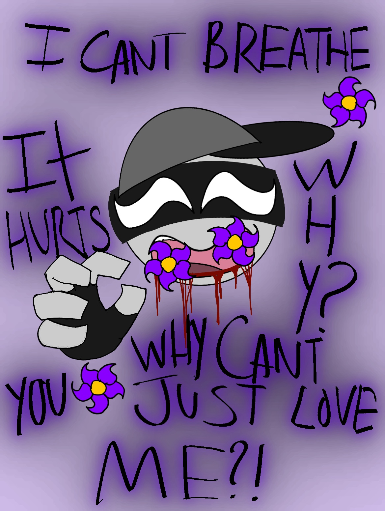

Splatter Info
Splatter herself:
Splatter was created in a lab by the auditor and Dr.J. The auditor wanted to create a strong grunt, something small but with almost as much power as a mag agent, he wanted to get rid of those dessenters. Dr.J being his best doctor and experimentalist, he was appointed for the job. After being created, Splatter faced intense training against every type of aahw. Coming out undefeated made the auditor curious.. But Splatter was more curious about the dissenters. who were these mysterious grunts so strong she had to be created? Who are the dessenters? A few days before she was suppoused to be released, Splatter escapes. The auditor is furious and creates an active hunt for Splatter. Splatter during her panic and running bumps into Sandford ( one of the 4 dessenters) Splatter crys to the man that she is running from the AAHW and the Auditor, Sanford does not Kill her but he isnt nice to her either, he captures her and takes him back to the other dessenters. They keep her captive for a while introgating her and wondering why she was running. After the dessenters notice shes not a threat they decide to keep her along. She knows how to fight and know about the aahw so she is quite useful.
Splatter's Diease:
before Splatters arrival X had become part of the dessenters. Splatter when she met X she did not have feelings for him. But as time went on she began to like him. Her love grew very strong but never talked about it although to all the other dessenters it was quite obvious. Even with the obvious crush on X he did not notice, and never had feelings for anyone. Knowing this fact, The Masked Angel uses this to her advantage.
(Click here for masked angel info)Knowing Splatter was created in a lab with the techonolgy of the AAHW, The masked angel programmed the Hanahaki Disease into splatters genetics. Splatter thinks its just her luck, and tries her best to cope. trying harder to get X to like her. This is when Dr.J comes into the the picture. He having made Splatter and dealing with this issue before, he offers Splatter the surgery to get it removed but Splatter refuses, "I'd rather die than never feel anything again. I hate this pain.. but i'd rather feel the pain than to never feel happiness or sadness or anything. It's not worth it..plus maybe one day.. he will like me? maybe he might realize.." So Splatter lives every day hoping that he might like her suddenly. This unfortunatly leaves her to her death. She dies in X's hands, and thats whe X realizes he likes her.

FUNFACT!!!!
Splatter is the first of my characters to have the Hanahaki Disease!